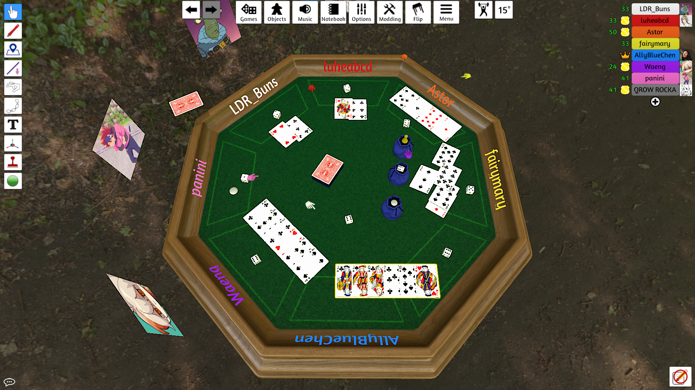
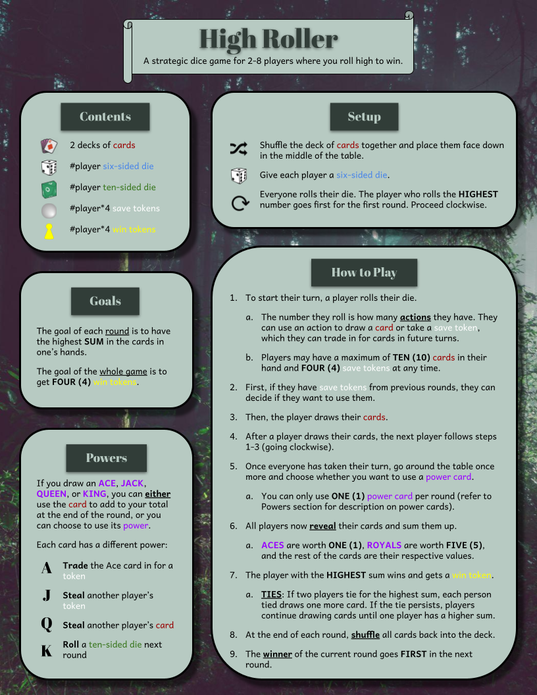

Overview
High Roller is an abstract tabletop game designed around two constraints: dice as the primary material and gameplay rounds that take one minute or less. Our goal was to create a fast-paced game that still gave players meaningful strategic decisions each round.
Design Constraints
We were given two constraints that shaped the design of the entire game:
- Material constraint: Dice
- Mechanical constraint: Each round must be completed in one minute or less
These constraints pushed us to find a way for the dice to have a meaningful role while keeping the gameplay fast enough to satisfy the short-round requirement.
Game Concept
Players roll a die to determine how many cards they can draw during a round. Players can choose to save tokens for future rounds or use them to draw more cards. At the end of the round, players compare the total value of their cards, with the highest total winning the round and earning a win token.
Special power cards add another layer of strategy by giving players a meaningful choice between using a card for its numerical value or activating its special ability.

Design Process
We began by brainstorming game ideas that could incorporate dice while meeting the short-round constraint. Our team developed several concepts before selecting the idea that became High Roller.
From there, we developed the core rules and gradually refined the game's win condition, card system, token system, turn order, and power-card mechanics through repeated discussion and playtesting.
Playtesting & Iteration
Playtesting was central to the development of High Roller. We used feedback from multiple playtests to identify problems with the rules, pacing, information available to players, and balance of special abilities.
Big Playtest 1
Our first playtest revealed several issues with the game's win condition and card availability. We initially used a single standard deck, but quickly discovered that cards could run out when multiple players drew cards across several rounds.
We responded by increasing the available cards to two standard decks, adding a reshuffle rule between rounds, and setting limits on cards and saved tokens.
Big Playtest 2
Our second playtest revealed a more significant strategic issue: allowing everyone to roll simultaneously gave players too much information about their opponents' decisions. This created a snowball effect for players who were already ahead.
In response, we introduced a turn-order system and made the winner of the previous round go first in the next round. We also continued adjusting the win condition, token rules, and power-card mechanics based on player feedback.
Balancing Power Cards
Power cards became one of the most challenging parts of the design. We wanted them to introduce additional strategic choices without becoming so powerful that they determined the outcome of a round.
Through repeated discussion and testing, we adjusted the strength of the powers, limited the number of power cards that could be used in a turn, and reduced the numerical value of cards when their abilities were especially strong.
Our final goal was to create meaningful choices where players had to consider whether using a power or keeping a card's numerical value would give them the better chance of winning.
Final Design
After four weeks of design and iteration, we developed a final version of High Roller that met both project constraints while maintaining the strategic choices we wanted players to experience.
Below is the final rule sheet.

Gameplay & Team Walkthrough
Watch our team play through High Roller and explain how the final version of the game works.
Design Documentation
We documented our design decisions, playtesting results, and iterations throughout development. The full design document includes the final rules, example game, post-mortem, design process, and meeting notes.
Reflection
High Roller taught me how design constraints can push a team toward creative solutions while also forcing us to prioritize the player experience. The biggest lesson I took away from the project was the value of playtesting: several mechanics that seemed effective during discussion created unintended strategic problems when players actually interacted with them.
Iterating on the rules based on player behavior helped me understand that good game design is not just about creating interesting ideas, but about testing those ideas and refining them until they produce the experience you want players to have.